分布式TensorFlow入门教程
码字不易，欢迎给个赞！
欢迎交流与转载，文章会同步发布在公众号：机器学习算法全栈工程师(Jeemy110)
前言
深度学习在各个领域实现突破的一部分原因是我们使用了更多的数据（大数据）来训练更复杂的模型（深度神经网络），并且可以利用一些高性能并行计算设备如GPU和FPGA来加速模型训练。但是有时候，模型之大或者训练数据量之多可能超出我们的想象，这个时候就需要分布式训练系统，利用分布式系统我们可以训练更加复杂的模型（单机无法装载），还可以加速我们的训练过程，这对于研究者实现模型的超参数优化是非常有意义的。2017年6月，Facebook发布了他们的论文Accurate, Large Minibatch SGD:Training ImageNet in 1 Hour，文中指出他们采用分布在32个服务器上的256块GPUs将Resnet-50模型在ImageNet数据集上的训练时间从两周缩短为1个小时。在软件层面，他们使用了很大的minibatch（8192）来训练模型，并且使学习速率正比于minibatch的大小。这意味着，采用分布式系统可以实现模型在成百个GPUs上的训练，从而大大减少训练时间，你也将有更多的机会去尝试各种各样的超参数组合。作为使用人数最多的深度学习框架，TensorFlow从version 0.8开始支持模型的分布式训练，现在的TensorFlow支持模型的多机多卡（GPUs和 CPUs）训练。在这篇文章里面，我将简单介绍分布式TensorFlow的基础知识，并通过实例来讲解如何使用分布式TensorFlow来训练模型。
Methods that scale with computation are the future of AI.
—Rich Sutton, 强化学习之父
在开始之前，有必要先简单介绍一下深度学习的分布式训练策略以及分布式架构。这有助于理解分布式TensorFlow系统。
分布式训练策略
模型并行
所谓模型并行指的是将模型部署到很多设备上（设备可能分布在不同机器上，下同）运行，比如多个机器的GPUs。当神经网络模型很大时，由于显存限制，它是难以在跑在单个GPU上，这个时候就需要模型并行。比如Google的神经机器翻译系统，其可能采用深度LSTM模型，如下图所示，此时模型的不同部分需要分散到许多设备上进行并行训练。深度学习模型一般包含很多层，如果要采用模型并行策略，一般需要将不同的层运行在不同的设备上，但是实际上层与层之间的运行是存在约束的：前向运算时，后面的层需要等待前面层的输出作为输入，而在反向传播时，前面的层又要受限于后面层的计算结果。所以除非模型本身很大，一般不会采用模型并行，因为模型层与层之间存在串行逻辑。但是如果模型本身存在一些可以并行的单元，那么也是可以利用模型并行来提升训练速度，比如GoogLeNet的Inception模块。
 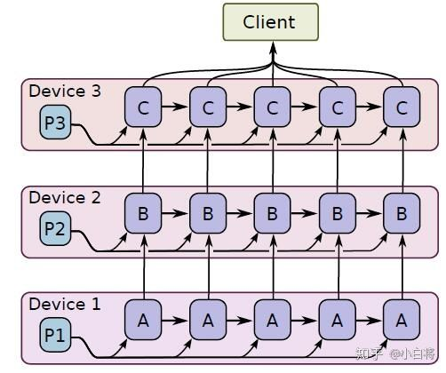
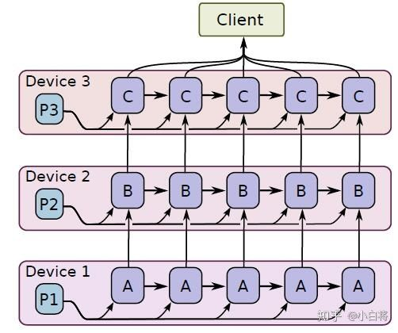数据并行
深度学习模型最常采用的分布式训练策略是数据并行，因为训练费时的一个重要原因是训练数据量很大。数据并行就是在很多设备上放置相同的模型，并且各个设备采用不同的训练样本对模型训练。训练深度学习模型常采用的是batch SGD方法，采用数据并行，可以每个设备都训练不同的batch，然后收集这些梯度用于模型参数更新。前面所说的Facebook训练Resnet50就是采用数据并行策略，使用256个GPUs，每个GPU读取32个图片进行训练，如下图所示，这样相当于采用非常大的batch（ ）来训练模型。
 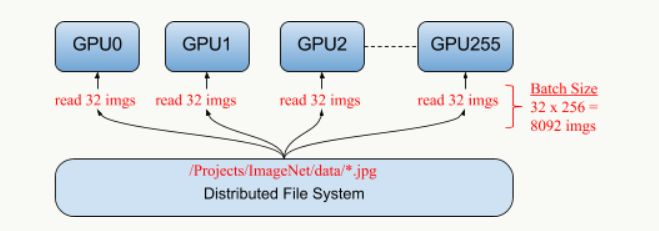
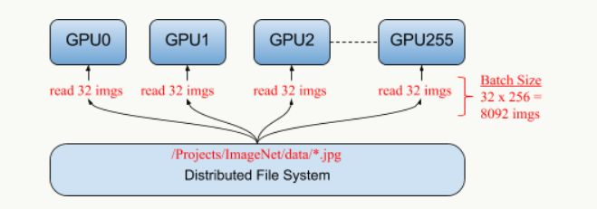数据并行可以是同步的（synchronous），也可以是异步的（asynchronous）。所谓同步指的是所有的设备都是采用相同的模型参数来训练，等待所有设备的mini-batch训练完成后，收集它们的梯度然后取均值，然后执行模型的一次参数更新。这相当于通过聚合很多设备上的mini-batch形成一个很大的batch来训练模型，Facebook就是这样做的，但是他们发现当batch大小增加时，同时线性增加学习速率会取得不错的效果。同步训练看起来很不错，但是实际上需要各个设备的计算能力要均衡，而且要求集群的通信也要均衡，类似于木桶效应，一个拖油瓶会严重拖慢训练进度，所以同步训练方式相对来说训练速度会慢一些。异步训练中，各个设备完成一个mini-batch训练之后，不需要等待其它节点，直接去更新模型的参数，这样总体会训练速度会快很多。但是异步训练的一个很严重的问题是梯度失效问题（stale gradients），刚开始所有设备采用相同的参数来训练，但是异步情况下，某个设备完成一步训练后，可能发现模型参数其实已经被其它设备更新过了，此时这个梯度就过期了，因为现在的模型参数和训练前采用的参数是不一样的。由于梯度失效问题，异步训练虽然速度快，但是可能陷入次优解（sub-optimal training performance）。异步训练和同步训练在TensorFlow中不同点如下图所示：
 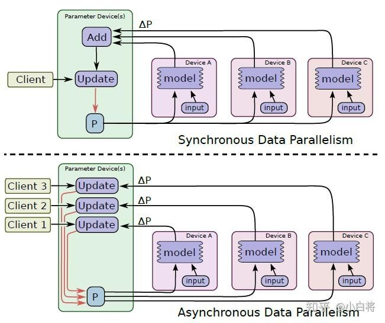
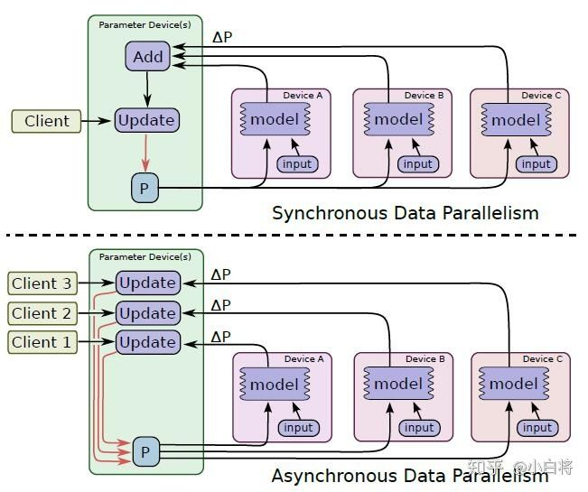为了解决异步训练出现的梯度失效问题，微软提出了一种Asynchronous Stochastic Gradient Descent方法，主要是通过梯度补偿来提升训练效果。应该还有其他类似的研究，感兴趣的可以深入了解一下。
分布式训练架构
前面说的是分布式训练策略，这里要谈的是系统架构层，包括两种架构：Parameter server architecture（就是常见的PS架构，参数服务器）和Ring-allreduce architecture。这里主要参考Distributed TensorFlow，完全是拿来主义了。
Parameter server架构
在Parameter server架构（PS架构）中，集群中的节点被分为两类：parameter server和worker。其中parameter server存放模型的参数，而worker负责计算参数的梯度。在每个迭代过程，worker从parameter sever中获得参数，然后将计算的梯度返回给parameter server，parameter server聚合从worker传回的梯度，然后更新参数，并将新的参数广播给worker。采用同步SGD方式的PS架构如下图所示：
 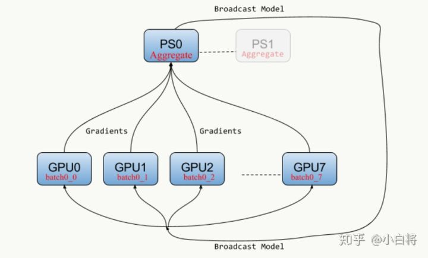
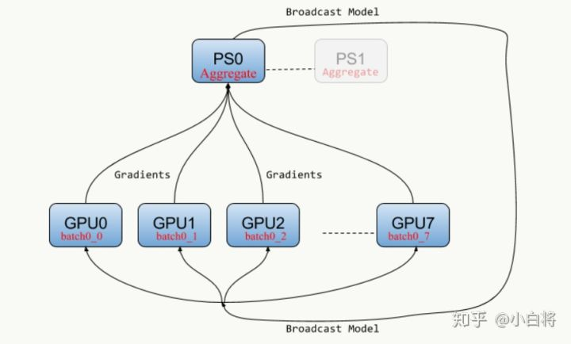在TensorFlow之前，Google采用的是DistBelief框架，其支持PS架构。TensorFlow从DistBelief借鉴了它的很多分布式训练模式，所以TensorFlow也支持PS架构。Mxnet的主要创建者李沐在前人基础上开发了更加通用的轻量级ps-lite，如果想深入理解PS架构，可以看一下沐神的讲解。PS架构是深度学习最常采用的分布式训练架构。
Ring-allreduce架构
在Ring-allreduce架构中，各个设备都是worker，并且形成一个环，如下图所示，没有中心节点来聚合所有worker计算的梯度。在一个迭代过程，每个worker完成自己的mini-batch训练，计算出梯度，并将梯度传递给环中的下一个worker，同时它也接收从上一个worker的梯度。对于一个包含 个worker的环，各个worker需要收到其它个
worker的梯度后就可以更新模型参数。其实这个过程需要两个部分：scatter-reduce和allgather，百度的教程对这个过程给出了详细的图文解释。百度开发了自己的allreduce框架，并将其用在了深度学习的分布式训练中。
 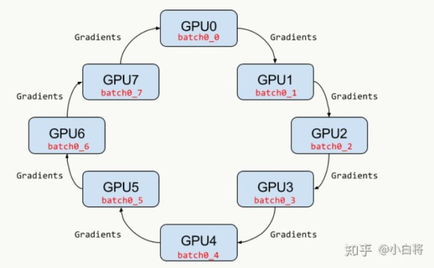
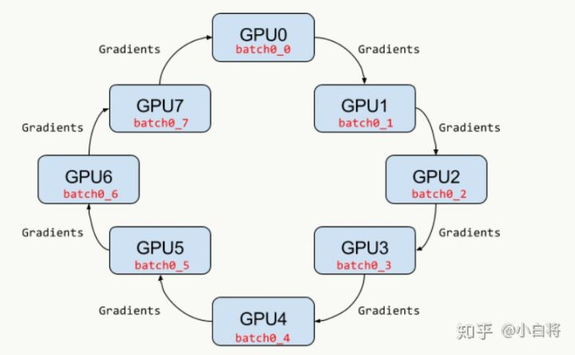相比PS架构，Ring-allreduce架构是带宽优化的，因为集群中每个节点的带宽都被充分利用。此外，在深度学习训练过程中，计算梯度采用BP算法，其特点是后面层的梯度先被计算，而前面层的梯度慢于前面层，Ring-allreduce架构可以充分利用这个特点，在前面层梯度计算的同时进行后面层梯度的传递，从而进一步减少训练时间。在百度的实验中，他们发现训练速度基本上线性正比于GPUs数目（worker数）。
分布式TensorFlow简介
好了，言归正传，现在开始介绍分布式TensorFlow的基础知识。在分布式TensorFlow中，参与分布式系统的所有节点或者设备被总称为一个集群（cluster），一个cluster中包含很多服务器（server），每个server去执行一项任务（task），server和task是一一对应的。所以，cluster可以看成是server的集合，也可以看成是task的集合。TensorFlow为各个task又增加了一个抽象层，将一系列相似的task集合称为一个job，比如在PS架构中，习惯称parameter server的task集合为ps，而称执行梯度计算的task集合为worker。所以cluster又可以看成是job的集合，不过这只是逻辑上的意义，具体还要看这个server真正干什么。在TensorFlow中，job用name（字符串）标识，而task用index（整数索引）标识，那么cluster中的每个task可以用job的name加上task的index来唯一标识。在分布式系统中，一般情况下各个task在不同的节点或者设备上执行。TensorFlow中用tf.train.ClusterSpec创建一个cluster：
cluster = tf.train.ClusterSpec({
"worker": [
"worker0.example.com:2222",
"worker1.example.com:2222",
"worker2.example.com:2222"
],
"ps": [
"ps0.example.com:2222",
"ps1.example.com:2222"
]})
可以看出，cluster接收的其实就是一个字典，字典里面包含了各个task所在host的主机地址，这个cluster共包含两类job：ps和worker，共5个task:
/job:worker/task:0
/job:worker/task:1
/job:worker/task:2
/job:ps/task:0
/job:ps/task:1
创建好cluster，需要创建各个task的server，使用tf.train.Server函数，比如创建第一个worker的server：
server = tf.train.Server(cluster, job_name="worker", task_index=0)
在创建sever时必须要传入cluster，这样每个server才可以知道自己所在的cluster包含哪些hosts，然后server与server之间才可以通信。sever的创建需要在自己所在host上，一旦所有的server在各自的host上创建好了，整个集群就搭建好了，cluster之间的各个server可以互相通信。具体来说，每个server包含两个组件：master和worker。其中master提供master service，其主要可以提供对cluster中各个设备的远程访问（RPC协议），同时它的另外一个重要功能是作为创建tf.Session的target。而worker提供worker service，可以用本地设备执行TF中的计算子图。这两个东西并不好理解，这里我们先讲TensorFlow中的另外一个重要概念：client，先抛出官方英文解释：
A client is typically a program that builds a TensorFlow graph and constructs a tensorflow::Session to interact with a cluster. Clients are typically written in Python or C++. A single client process can directly interact with multiple TensorFlow servers (see "Replicated training" above), and a single server can serve multiple clients.
这个client是个很重要的概念，简单来说就是一个程序，它创建了TF的计算图，并通过建立Session与cluster中的设备进行交互。说白了前面创建的cluster与server只是搭建分布式环境，真正要执行计算需要创建client。对于tf.Session这个类，其第一个参数是target，一般情况下大家确实用不到，因为不指定这个参数的话，Session就默认调用本地设备，但是在分布式环境就需要指定了，这就是server里面的master（server.target提供这个参数）。实际上，TensorFlow的完整执行逻辑如下图所示：
 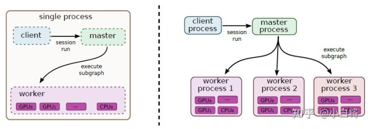
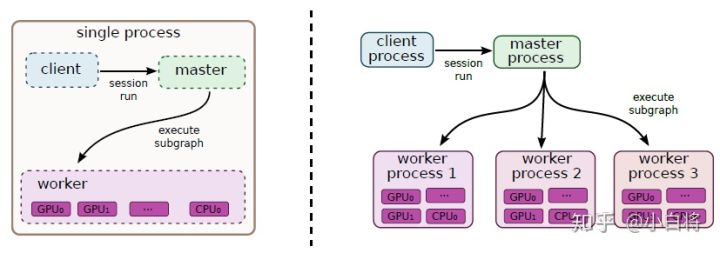就是说client要跑计算时，其实要先要把计算图以及要执行的节点（Graph中的Node）发给master，master负责资源调度（就是这个计算该怎么执行，在哪些设备执行），最终的执行需要各个worker进程（使用本地设备执行计算），所以每个server会包含master和worker两个部分。关于master的具体作用，可以参考一下TF教程中的TensorFlow Architecture，不过这里贴一张图，大家意淫一下：
 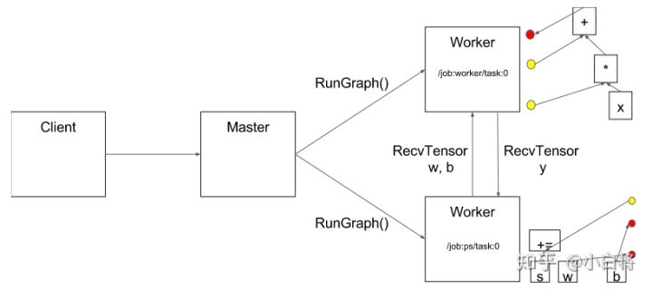
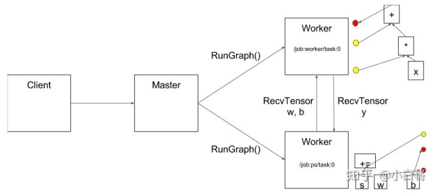上面简单解释了一下server和client相关的一些重要概念，帮助大家理解分布式TensorFlow的执行逻辑。那么，在构建Graph时如何调用cluster中的各个server呢？很简单，使用tf.device，只需要指定task的详细信息即可：
with tf.device("/job:ps/task:0"):
weights_1 = tf.Variable(...)
biases_1 = tf.Variable(...)
with tf.device("/job:ps/task:1"):
weights_2 = tf.Variable(...)
biases_2 = tf.Variable(...)
with tf.device("/job:worker/task:7"):
input, labels = ...
layer_1 = tf.nn.relu(tf.matmul(input, weights_1) + biases_1)
logits = tf.nn.relu(tf.matmul(layer_1, weights_2) + biases_2)
# ...
train_op = ...
很简单，就如同把cluster里面的设备当成本机设备一样使用，至于怎么真正执行，那就是系统层面的事了。构建了Graph后，我们需要创建Session来执行计算图：
with tf.Session("grpc://worker7.example.com:2222") as sess:
for _ in range(10000):
sess.run(train_op)
注意由于是分布式系统，需要指定Session的target参数，或者采用grpc+主机地址，或者直接利用sever.target，两个是完全一样的。下面我们通过一个简单的实例来理解上面过程，这个例子的cluster共包含3个task：1个ps和2个worker。
import tensorflow as tf
tf.app.flags.DEFINE_string("ps_hosts", "localhost:2222", "ps hosts")
tf.app.flags.DEFINE_string("worker_hosts", "localhost:2223,localhost:2224", "worker hosts")
tf.app.flags.DEFINE_string("job_name", "worker", "'ps' or'worker'")
tf.app.flags.DEFINE_integer("task_index", 0, "Index of task within the job")
FLAGS = tf.app.flags.FLAGS
def main(_):
ps_hosts = FLAGS.ps_hosts.split(",")
worker_hosts = FLAGS.worker_hosts.split(",")
# create cluster
cluster = tf.train.ClusterSpec({"ps": ps_hosts, "worker": worker_hosts})
# create the server
server = tf.train.Server(cluster, job_name=FLAGS.job_name, task_index=FLAGS.task_index)
server.join()
if __name__ == "__main__":
tf.app.run()
注意这里用单机环境模拟多机环境，然后分别执行下面三个命令行来创建三个server：
python example.py --job_name=ps --task_index=0
python example.py --job_name=worker --task_index=0
python example.py --job_name=worker --task_index=1
执行完毕后，三个server都处在等待状态，现在我们在创建一个client来执行一个计算图，并且采用/job:worker/task:0这个server所对应的master，即grpc://localhost:2223来创建Session，如下所示：
import tensorflow as tf
if __name__ == "__main__":
with tf.device("/job:ps/task:0"):
x = tf.Variable(tf.ones([2, 2]))
y = tf.Variable(tf.ones([2, 2]))
with tf.device("/job:worker/task:0"):
z = tf.matmul(x, y) + x
with tf.device("/job:worker/task:1"):
z = tf.matmul(z, x) + x
with tf.Session("grpc://localhost:2223") as sess:
sess.run(tf.global_variables_initializer())
val = sess.run(z)
print(val)
其实这个client就是一个进程，但是其在计算时需要依靠cluster中的device来执行部分计算子图。值得注意的是上面的程序我们遵循了PS架构，参数放置在ps，而worker执行计算。但是在TensorFlow中，其实每个task所属的job只是一个概念，并没有什么差别，就是说对于上面的程序，你完全可以把参数放置在worker上。所以说，TensorFlow的分布式架构支持PS模式，并且也往往采用这种方式，但是TensorFlow并不完全与PS架构对等。
复制训练(Replicated training)
前面已经说过了，深度学习模型分布式训练最常用的是数据并行策略，在TensorFlow中称这为复制训练（Replicated training），就是说多个worker使用不同的mini-batch训练相同的模型，计算出的梯度用于更新放置在ps的模型参数。由于复制训练是一种最常用的模式，TensorFlow也增加了一些库函数来简化复制训练的实现。在TensorFlow中共有四种不同的方式来实现复制训练：
- In-graph replication：只构建一个client，这个client构建一个Graph，Graph中包含一套模型参数，放置在ps上，同时Graph中包含模型计算部分的多个副本，每个副本都放置在一个worker上，这样多个worker可以同时训练复制的模型。TensorFlow教程中的使用多个GPUs训练cifar10分类模型就属于这个类型，每个GPUs上的计算子图是相同的，但是属于同一个Graph。这种方法很少使用，因为一旦client挂了，整个系统就全崩溃了，容错能力差。
- Between-graph replication：每个worker都创建一个client，这个client一般还与task的主程序在同一进程中。各个client构建相同的Graph，但是参数还是放置在ps上。这种方式就比较好，一个worker的client挂掉了，系统还可以继续跑。
- Asynchronous training：异步方式训练，各个worker自己干自己的，不需要与其它worker来协调，前面也已经详细介绍了异步训练，上面两种方式都可以采用异步训练。
- Synchronous training：同步训练，各个worker要统一步伐，计算出的梯度要先聚合才可以执行一次模型更新，对于In-graph replication方法，由于各个worker的计算子图属于同一个Graph，很容易实现同步训练。但是对于Between-graph replication方式，各个worker都有自己的client，这就需要系统上的设计了，TensorFlow提供了tf.train.SyncReplicasOptimizer来实现Between-graph replication的同步训练。
由于在TensorFlow中最常用的是Between-graph replication方式，这里着重讲一下如何实现这种方式。在Between-graph replication中，各个worker都包含一个client，它们构建相同的计算图，然后把参数放在ps上，TensorFlow提供了一个专门的函数tf.train.replica_device_setter来方便Graph构建，先看代码：
# cluster包含两个ps 和三个 worker
cluster_spec = {
"ps": ["ps0:2222", "ps1:2222"],
"worker": ["worker0:2222", "worker1:2222", "worker2:2222"]}
cluster = tf.train.ClusterSpec(cluster_spec)
with tf.device(tf.train.replica_device_setter(
worker_device="/job:worker/task:%d" % FLAGS.task_index,
cluster=cluster)):
# Build your graph
v1 = tf.Variable(...) # assigned to /job:ps/task:0
v2 = tf.Variable(...) # assigned to /job:ps/task:1
v3 = tf.Variable(...) # assigned to /job:ps/task:0
# Run compute
使用tf.train.replica_device_setter可以自动把Graph中的Variables放到ps上，而同时将Graph的计算部分放置在当前worker上，省去了很多麻烦。由于ps往往不止一个，这个函数在为各个Variable分配ps时默认采用简单的round-robin方式，就是按次序将参数挨个放到各个ps上，但这个方式可能不能使ps负载均衡，如果需要更加合理，可以采用tf.contrib.training.GreedyLoadBalancingStrategy策略。
采用Between-graph replication方式的另外一个问题，由于各个worker都独立拥有自己的client，但是对于一些公共操作比如模型参数初始化与checkpoint文件保存等，如果每个client都独立进行这些操作，显然是对资源的浪费。为了解决这个问题，一般会指定一个worker为chief worker，它将作为各个worker的管家，协调它们之间的训练，并且完成模型初始化和模型保存和恢复等公共操作。在TensorFlow中，可以使用tf.train.MonitoredTrainingSession创建client的Session，并且其可以指定哪个worker是chief worker。关于这些方面，想深入理解可以看一下2017 TensorFlow 开发峰会的官方讲解，其中也对分布式TensorFlow的容错机制做了简单介绍。
 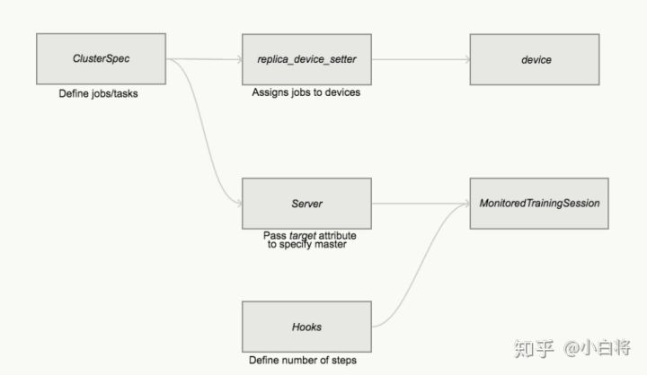
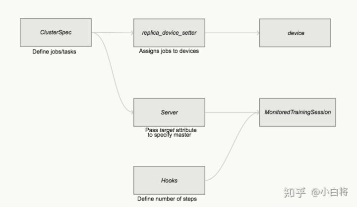MNIST分布式训练实例
最后，我们给出MNIST的分布式训练实例，采用Between-graph replication方式，并且同步训练和异步训练都支持。在这个例子中，cluster共包含2个ps和2个worker，其中worker1为chief worker。代码如下：
import tensorflow as tf
from tensorflow.contrib.learn.python.learn.datasets.mnist import read_data_sets
tf.app.flags.DEFINE_string("ps_hosts", "localhost:2222", "ps hosts")
tf.app.flags.DEFINE_string("worker_hosts", "localhost:2223,localhost:2224", "worker hosts")
tf.app.flags.DEFINE_string("job_name", "worker", "'ps' or'worker'")
tf.app.flags.DEFINE_integer("task_index", 0, "Index of task within the job")
tf.app.flags.DEFINE_integer("num_workers", 2, "Number of workers")
tf.app.flags.DEFINE_boolean("is_sync", False, "using synchronous training or not")
FLAGS = tf.app.flags.FLAGS
def model(images):
"""Define a simple mnist classifier"""
net = tf.layers.dense(images, 500, activation=tf.nn.relu)
net = tf.layers.dense(net, 500, activation=tf.nn.relu)
net = tf.layers.dense(net, 10, activation=None)
return net
def main(_):
ps_hosts = FLAGS.ps_hosts.split(",")
worker_hosts = FLAGS.worker_hosts.split(",")
# create the cluster configured by `ps_hosts' and 'worker_hosts'
cluster = tf.train.ClusterSpec({"ps": ps_hosts, "worker": worker_hosts})
# create a server for local task
server = tf.train.Server(cluster, job_name=FLAGS.job_name,
task_index=FLAGS.task_index)
if FLAGS.job_name == "ps":
server.join() # ps hosts only join
elif FLAGS.job_name == "worker":
# workers perform the operation
# ps_strategy = tf.contrib.training.GreedyLoadBalancingStrategy(FLAGS.num_ps)
# Note: tf.train.replica_device_setter automatically place the paramters (Variables)
# on the ps hosts (default placement strategy: round-robin over all ps hosts, and also
# place multi copies of operations to each worker host
with tf.device(tf.train.replica_device_setter(worker_device="/job:worker/task:%d" % (FLAGS.task_index),
cluster=cluster)):
# load mnist dataset
mnist = read_data_sets("./dataset", one_hot=True)
# the model
images = tf.placeholder(tf.float32, [None, 784])
labels = tf.placeholder(tf.int32, [None, 10])
logits = model(images)
loss = tf.reduce_mean(tf.nn.softmax_cross_entropy_with_logits(logits=logits, labels=labels))
# The StopAtStepHook handles stopping after running given steps.
hooks = [tf.train.StopAtStepHook(last_step=2000)]
global_step = tf.train.get_or_create_global_step()
optimizer = tf.train.AdamOptimizer(learning_rate=1e-04)
if FLAGS.is_sync:
# asynchronous training
# use tf.train.SyncReplicasOptimizer wrap optimizer
# ref: https://www.tensorflow.org/api_docs/python/tf/train/SyncReplicasOptimizer
optimizer = tf.train.SyncReplicasOptimizer(optimizer, replicas_to_aggregate=FLAGS.num_workers,
total_num_replicas=FLAGS.num_workers)
# create the hook which handles initialization and queues
hooks.append(optimizer.make_session_run_hook((FLAGS.task_index==0)))
train_op = optimizer.minimize(loss, global_step=global_step,
aggregation_method=tf.AggregationMethod.ADD_N)
# The MonitoredTrainingSession takes care of session initialization,
# restoring from a checkpoint, saving to a checkpoint, and closing when done
# or an error occurs.
with tf.train.MonitoredTrainingSession(master=server.target,
is_chief=(FLAGS.task_index == 0),
checkpoint_dir="./checkpoint_dir",
hooks=hooks) as mon_sess:
while not mon_sess.should_stop():
# mon_sess.run handles AbortedError in case of preempted PS.
img_batch, label_batch = mnist.train.next_batch(32)
_, ls, step = mon_sess.run([train_op, loss, global_step],
feed_dict={images: img_batch, labels: label_batch})
if step % 100 == 0:
print("Train step %d, loss: %f" % (step, ls))
if __name__ == "__main__":
tf.app.run()
异步执行时，分别执行下面四条语句：
python distributed_mnist.py --ps_hosts=localhost:2222,localhost:2223 --worker_hosts=localhost:2224,localhost:2225 --job_name=ps --task_index=0
python distributed_mnist.py --ps_hosts=localhost:2222,localhost:2223 --worker_hosts=localhost:2224,localhost:2225 --job_name=ps --task_index=1
python distributed_mnist.py --ps_hosts=localhost:2222,localhost:2223 --worker_hosts=localhost:2224,localhost:2225 --job_name=worker --task_index=0
python distributed_mnist.py --ps_hosts=localhost:2222,localhost:2223 --worker_hosts=localhost:2224,localhost:2225 --job_name=worker --task_index=1
此时你会看到两个worker打印出的step是交叉的，说明此时是异步执行的，每个worker执行一次梯度计算后，立即将梯度发给ps完成参数更新。
对于同步执行，采用tf.train.SyncReplicasOptimizer，分别执行下面四条语句：
python distributed_mnist.py --ps_hosts=localhost:2222,localhost:2223 --worker_hosts=localhost:2224,localhost:2225 --job_name=ps --task_index=0 --is_sync=True
python distributed_mnist.py --ps_hosts=localhost:2222,localhost:2223 --worker_hosts=localhost:2224,localhost:2225 --job_name=ps --task_index=1 --is_sync=True
python distributed_mnist.py --ps_hosts=localhost:2222,localhost:2223 --worker_hosts=localhost:2224,localhost:2225 --job_name=worker --task_index=0 --is_sync=True
python distributed_mnist.py --ps_hosts=localhost:2222,localhost:2223 --worker_hosts=localhost:2224,localhost:2225 --job_name=worker --task_index=1 --is_sync=True
此时你可以看到两个worker基本上同时打印相同的step（但是loss是不一样的），说明是同步执行。值得注意的是，TensorFlow中的同步训练可能与你想象中不同，它只是收集足够的梯度（N个step的梯度结果）就聚合这些梯度值然后执行一次参数更新。但是它不管这N个结果是从哪里来的，如果其中某个worker速度很慢，可能这N个结果都是从其他worker计算出的。言外之意就是chief worker聚合的梯度不一定是从全部worker中收集而来的（参考这个issues）。这个机制很怪异，我想是为了容错机制，不至于一个worker死掉了而终止整个训练过程。所以，在同步训练过程中，最好每个worker的能力都差不多，要不然很难得到想要的加速效果（某个worker慢的话，它计算的梯度可能过期，那么只能被丢弃，这种情况下这个worker做的就是无用功）。
走的更远
TensorFlow可以与Hadoop和Spark等工具结合，感兴趣的话可以自己深入去学习：
- TensorFlow官方教程：How to run TensorFlow on Hadoop.
- Yahho: Open Sourcing TensorFlowOnSpark: Distributed Deep Learning on Big-Data Clusters.
小结
最近打算学习一下分布式TensorFlow，所以系统地看了官方文档以及一些国外的博客，然后就把其中一些讲解得比较好的地方以及自己的学习心得总结了一下，所以就有了此文。但是网上的资料并不是很多，所以文中有错误之处在所难免，也恳请各位大佬斧正。很偶然地看到一篇最新的综述文章Demystifying Parallel and Distributed Deep Learning: An In-Depth Concurrency Analysis，60页的paper系统总结了深度学习的并行化策略，想深入学习的可以读读这个paper。
参考
- Distributed TensorFlow.
- How to write distributed TensorFlow code — with an example on Clusterone.
- MNIST实例：Distributing TensorFlow.
- Google TF 官网：Distributed TensorFlow.
- Distributed TensorFlow（2017 TensorFlow 开发峰会）.
- Baidu Research: Bringing HPC Techniques to Deep Learning.
- TensorFlow学习笔记（9）：分布式TensorFlow.
- Distributed TensorFlow Example.
- TensorFlow白皮书2016：TensorFlow: A System for Large-Scale Machine Learning.
- TensorFlow白皮书2015：TensorFlow: Large-Scale Machine Learning on Heterogeneous Distributed Systems.
（注：文中图片原始来源均可以在文中或者参考文章的链接中找到）
码字不易，欢迎给个赞！
欢迎交流与转载，文章会同步发布在公众号：机器学习算法全栈工程师(Jeemy110)
8 条评论
赞
我正打算把我实验室的多块GPU整合一下呢
不错的干货
不错是干货 。赞
可以问一下 文中的图是用的什么办法画的吗